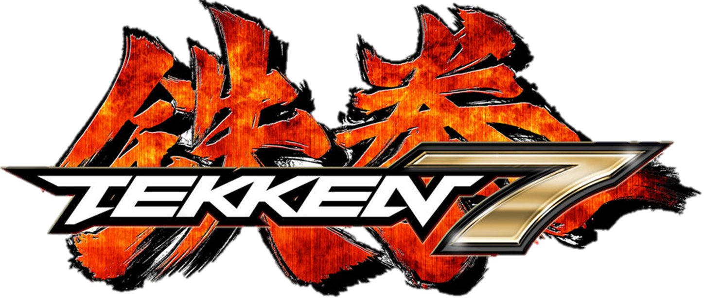
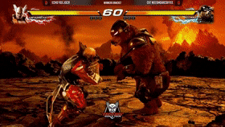
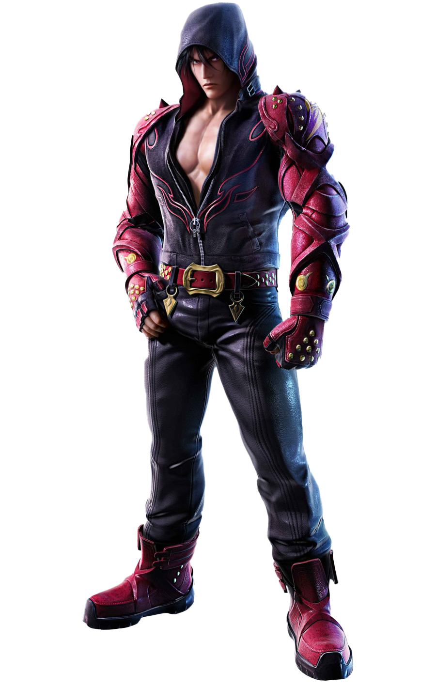
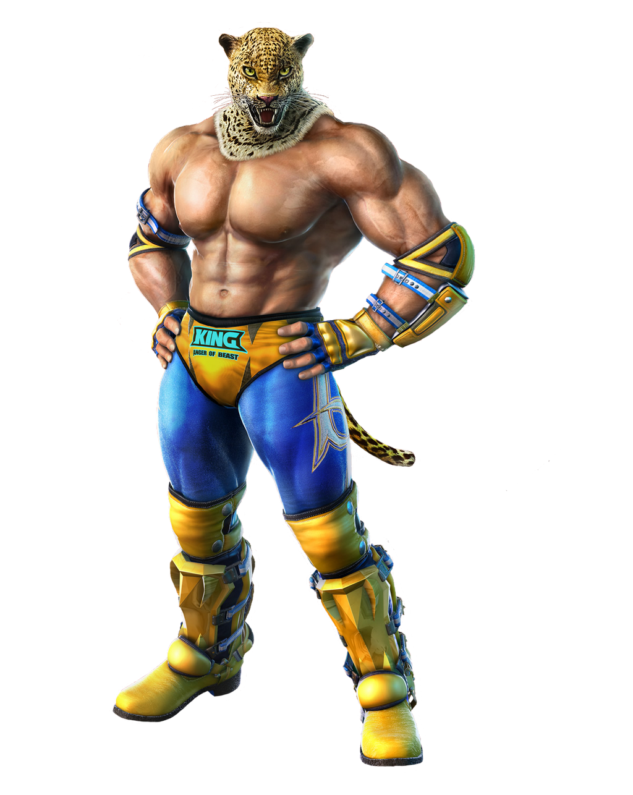
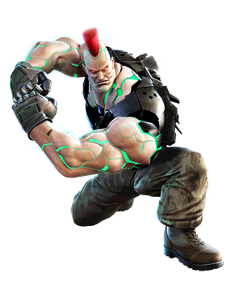

Tekken is a 3D Fighter which means you can go to the righ, left and sidestep up or down, this makes the game very special and makes it on of the hardest if not THE hardest fighting game you can play because of how hard it is to learn and master, if you feel like playing a fighting game for a long time and learning everytime you play this is the one for you


JIN KAZAMA is the basic fighter of the game that is easy to pick up and has the most friendly toolset for a new player. He still has some tricks up his sleeve with alot of moves to bait your opponent. Overall a great character to start with that has tricks to master that you can work up to the higher ranks if you decide to stick with him.


KING is a special character because his play style is of a GRAPPLER a character archetype which focuses on grabbing the opponent for high damage. What makes Kings grabs special is that he can chain grab them making him able to do more than half of the opponents health if they are not able to get out of them.


JACK-7 is a keep away character with his long arms he can keep away the opponent and chip away with his fast lows and powerful grabs if they get too close. Because of Jack-7 Size its hard for him to side step to dodge attacks. Jack can pull of some high damage combos but is more viable for pokings as his base attafcks do great damage.